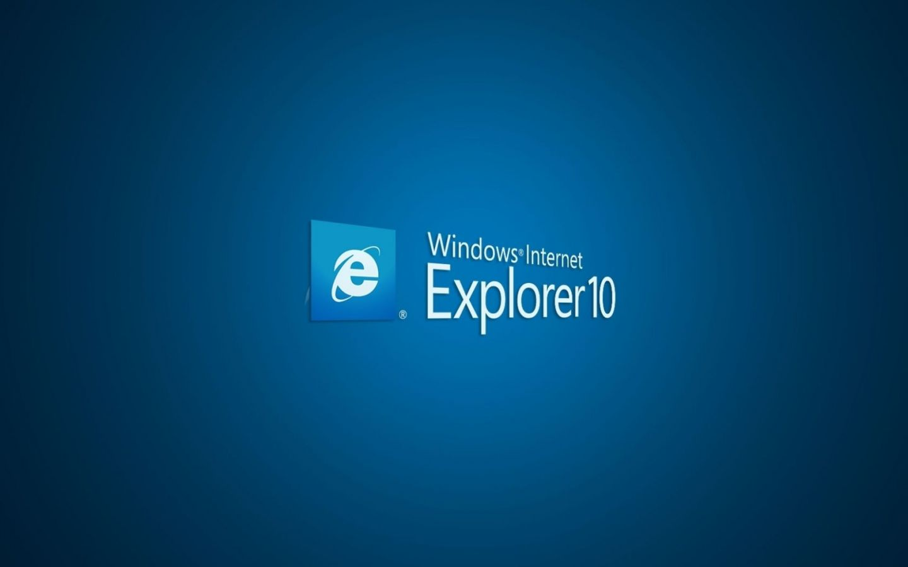

Firefox
Mozilla Firefox is a free and open-source web browser developed by Mozilla Foundation and its subsidiary, Mozilla Corporation.

IE
GInternet Explorer is a series of graphical web browsers developed by Microsoft and included in the Microsoft Windows line of operating systems, starting in 1995.


Opera
Opera is a web browser for Windows, macOS, and Linux operating systems developed by Opera Software. It uses the Blink layout engine.